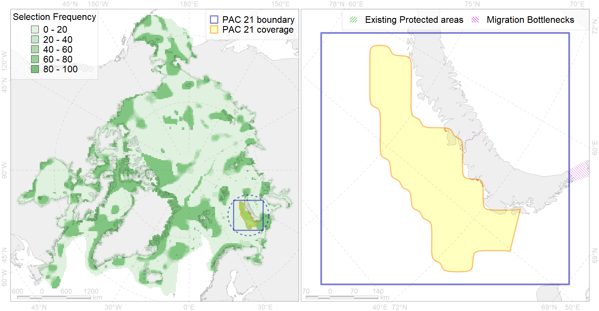

Region 21
Region 21
“ArcNet” scenario 33 achievement for region 21.
Use Accenter for advanced mode.

0
CFs inside of Region completely
7
CFs inside of Region at quarter
8
Complete-targets achievement by Region
22
Half-targets achievement by Region
| CF | Name | Target Achievement for Region | Proportion of Target Achievement in Region | Amount Proportion in Region |
|---|---|---|---|---|
| 7255 | 7255 I 1 1 5 5 | 99.7% | 91.6% | 76.3% |
| 7254 | 7254 I 1 1 5 4 | 96.5% | 95.8% | 71.3% |
| 6032 | Little auk (Alle alle alle) breeding colonies in Novaya Zemlya | 105.8% | 96.4% | 57.1% |
| 6092 | 6092 Little auk breeding colonies of A. alle alle NZ | 141.1% | 91.4% | 55.0% |
| 3119 | polynya NZ W | 356.7% | 69.1% | 48.7% |
| 4040 | Larvae distribution of the Polar Cod (Boreogadus saida) in the Barents Sea (F35) | 69.6% | 40.1% | 37.0% |
| 7068 | I.1.1.5.1. Shallow ( < 100 m) shelf banks | 358.7% | 50.8% | 35.2% |
| 2003 | Bearded seal whelping areas in the Barents Sea | 62.1% | 27.0% | 16.1% |
| 6020 | Long-tailed duck (Clangula hyemalis) North East Atlantic moulting&migration stopovers | 14.7% | 14.7% | 12.3% |
| 4001 | Arctic fish complex of the Barents region | 181.0% | 32.9% | 12.0% |
| 7236 | Kelp forests of North Island of Novaya Zemlya | 28.7% | 26.6% | 11.0% |
| 7041 | South-eastern Barents - White Sea transitional zone | 76.5% | 24.8% | 10.5% |
| 5099 | White-beaked dolphin feeding area in the Eastern North Atlantic | 78.1% | 28.1% | 10.1% |
| 2041 | Ringed seal whelping areas in the Barents Sea | 36.7% | 15.6% | 9.7% |
| 4038 | Feeding area of the Polar cod in the Barents Sea (F 35) | 35.2% | 25.4% | 9.7% |
| 1010 | Atlantic Walrus Winter Distribution in Pechora and Kara region | 25.6% | 16.9% | 9.4% |
| 7076 | I.1.3.4. Estuaries and lagoons | 22.7% | 10.4% | 8.9% |
| 7241 | Kelp forests of South Island of Novaya Zemlya and Matochkin Shar Strait | 23.7% | 13.4% | 8.9% |
| 2020 | Harp seal foraging areas in the Barents Sea | 29.0% | 28.9% | 7.9% |
| 6090 | 6090 Fratercularcticnaumanni breeding colonies | 14.4% | 9.1% | 7.5% |
| 7066 | I.1.1.3. Shelf plains | 166.7% | 13.7% | 7.0% |
| 4072 | Range of the Pechora herring (Clupea pallaii suworowi) (F 9) | 49.3% | 14.0% | 7.0% |
| 4054 | Range of the Shorthorn Sculpin (Myoxocephalus scorpius) (F 46), European populations | 186.6% | 13.6% | 6.5% |
| 4089 | Fish zoogeography, Arctic Region, Subarctic Transitional-Atlantic Province, Mesen’ – Pechora aquatory of the Barents District | 27.5% | 12.3% | 6.2% |
| 4057 | Range of the American Plaice (Hippoglossoides platessoides) (F 47), American populations | 173.6% | 15.7% | 5.9% |
| 6101 | 6101 Uriaalge aalge breeding colonies | 14.8% | 10.4% | 5.7% |
| 3026 | Marginal Ice Zone distribution in April in the Barents Sea LME | 43.9% | 10.4% | 5.7% |
| 3012 | Fast ice distribution in the Pechora Sea | 73.9% | 6.3% | 5.1% |
| 4076 | Fish zoogeography, Arctic Region, High-Arctic Shelf Province, N Barents – Kara-Sea District | 62.6% | 16.2% | 5.1% |
| 6106 | 6106 Urilomvilomvibreeding colonies | 9.4% | 6.9% | 5.0% |
| 6061 | Common eider (Somateria mollissima mollissima) SE Barents and Kara Sea breeding&moulting grounds | 7.5% | 6.9% | 4.8% |
| 7265 | Barents and Kara Sea Throughs | 91.4% | 31.7% | 4.8% |
| 6082 | Thick-billed murre (Uria lomvia lomvia) breeding colonies | 4.8% | 4.1% | 4.5% |
| 4094 | Subarctic fish complex of the Barents region | 62.3% | 11.5% | 4.5% |
| 6004 | Little Auk (Alle alle polaris) wintering grounds | 19.7% | 11.0% | 4.1% |
| 4039 | Spawning areas of the Polar Cod (Boreogadus saida) in the Barents Sea (F 35) | 8.2% | 5.5% | 4.0% |
| 6049 | Black-legged kittiwake (Rissa tridactyla tridactyla) wintering grounds | 10.3% | 10.2% | 3.8% |
| 4049 | Range of the Haddock (Melanogrammus aeglefinus) (F 42) | 53.2% | 8.5% | 3.7% |
| 6023 | Atlantic puffin (Fratercula arctica naumanni) wintering grounds | 13.5% | 10.9% | 3.7% |
| 6099 | 6099 Rissa tridactyla tridactyla breeding colonies | 5.1% | 5.1% | 3.6% |
| 7064 | I.1.1.1. Coastal domain in the Barents Sea | 36.2% | 5.1% | 3.3% |
| 6043 | Stellers eider (Polysticta stelleri) Atlantic moulting&migration stopovers | 5.0% | 3.6% | 3.1% |
| 6028 | Glaucous gull (Larus hyperboreus hyperboreus) breeding grounds | 21.2% | 3.3% | 3.0% |
| 4046 | Range of the Thorny Skate (Amblyraja radiata) (F 3) | 35.1% | 6.6% | 2.9% |
| 5007 | Beluga of the Barents-Kara-Laptev Sea stock general distribution | 10.4% | 6.9% | 2.8% |
| 9038 | polar bear denning areas of BS (Barents Sea) subpopulation | 4.1% | 2.6% | 2.7% |
| 7067 | I.1.1.4. Shelf troughs | 70.6% | 11.3% | 2.7% |
| 4045 | Feeding/migration area of the Pink Salmon (Oncorhynchus gorbuscha), native distribution (F23) | 37.9% | 6.2% | 2.6% |
| 4003 | Range of the Atlantic Capelin (Mallotus villosus) (F10) | 67.0% | 5.7% | 2.3% |
| 4030 | Feeding area of the Arctic charr (Salvelinus alpinus), anadromous populations (F28) | 5.3% | 4.7% | 2.2% |
| 4017 | Feeding/ migration area of the Greenland Shark (Somniosus microcephalus) (F1) | 8.7% | 5.1% | 2.2% |
| 4052 | Range of the Fourhorn Sculpin (Myoxocephalus quadricornis) (F 45), American populations | 59.8% | 4.1% | 2.0% |
| 6047 | Black-legged kittiwake (Rissa tridactyla pollicarius) breeding colonies | 1.6% | 1.4% | 1.2% |
| 6022 | Atlantic puffin (Fratercula arctica naumanni) breeding colonies | 1.3% | 1.0% | 1.2% |
| 3014 | Fast ice distribution in the Novaya Zemlya region | 12.7% | 2.9% | 1.0% |
| 8032 | Salt marshes of the Barents Sea LME | 1.7% | 1.7% | 1.0% |
| 9028 | polar bear denning areas of KS (Kara Sea) subpopulation | 1.8% | 1.8% | 1.0% |
| 4059 | Range of the Greenland Halibut (Reinhardtius hippoglossoides) (F 49) | 26.8% | 2.3% | 0.9% |
| 5112 | Arctic Cetaceans (beluga, bowhead, narwhal) winter habitats as predicterd by MIZ | 1.9% | 1.5% | 0.8% |
| 4041 | Range of the Polar Cod (Boreogadus saida) (F35) | 5.7% | 2.2% | 0.8% |
| 7049 | Pechora Sea - Baidara Bay transitional zone | 2.0% | 1.0% | 0.6% |
| 9003 | polar bear of the BS (Barents Sea) subpopulation distribution | 1.9% | 0.9% | 0.6% |
| 6015 | Black guillemot (Cepphus grylle mandti) breeding grounds | 3.9% | 0.8% | 0.6% |
| 4006 | Feeding/nursery area of the Pacific rainbow smelt (Osmerus dentex) (F12) | 3.0% | 1.1% | 0.5% |
| 4027 | Feeding/migration area of the Atlantic salmon (Salmo salar) American populations (F27) | 2.2% | 1.5% | 0.5% |
| 4020 | Feeding area of the White-sea vendace (Coregonus sardinella marisalbi) (F21) | 1.6% | 0.7% | 0.4% |
| 4008 | Feeding / nursery area of the Arctic Cisco (Coregonus autumnalis), Eurasian populations (F 14) | 1.1% | 1.0% | 0.4% |
| 5053 | Harbour porpoise feeding areas in the Barents Sea | 2.3% | 1.4% | 0.3% |
| 9010 | polar bear of the KS (Kara Sea) subpopulation distribution | 0.5% | 0.5% | 0.1% |
| 4043 | Range of Nawaga (Eleginus nawaga) (F37) | 1.0% | 0.3% | 0.1% |
| 4015 | Feeding area of the Broad whitefish (Coregonus nasus), American populations (F 19) | 0.3% | 0.3% | 0.1% |
| 1009 | Atlantic Walrus Summer Distribution in Pechora and Kara region | 0.3% | 0.1% | 0.1% |
| 4014 | Feeding area of the Siberian whitefish (Coregonus pidschian) (F 18) | 0.3% | 0.2% | 0.1% |
| 4018 | Feeding area of the Vendace, Least cisco (Coregonus sardinellа), Euro-Asian populations (F 20) | 0.3% | 0.2% | 0.1% |
| 4021 | Feeding area of the Inconnu (Stenodus leucichthys nelma), Euro-Asian populations (F 22) | 0.2% | 0.2% | 0.1% |
| 4058 | Range of the Arctic flounder (Liopsetta glacialis) (F48) | 0.4% | 0.1% | 0.0% |
| 6083 | Thick-billed murre (Uria lomvia lomvia) wintering grounds | 0.0% | 0.0% | 0.0% |